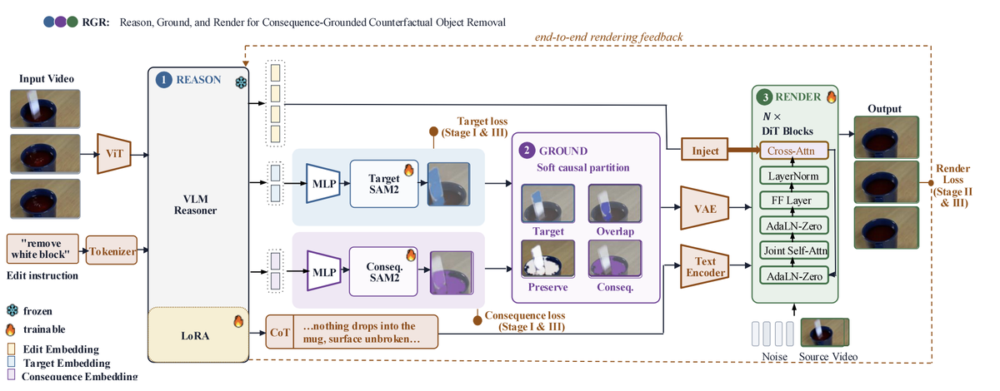

Reason, Ground, and Render: Consequence-Grounded Counterfactual Object Removal in Video
Under review, 2026审稿中，2026
An end-to-end video editing model that reasons about the physical consequences of removing an object, grounds them, and renders the edited video — with a 92-task counterfactual editing benchmark. 端到端视频编辑模型：先推理移除物体的物理后果，再进行 grounding 与渲染；同时提出包含 92 个任务的反事实编辑基准。